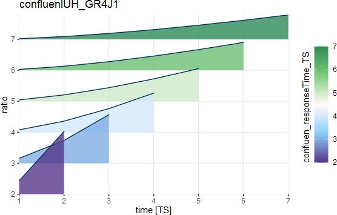

The process confluenIUH return a series of portions, that means how many flux water will
in those moment into the river.
The sum of this series will always in 1.
So we can give the function:
\[u = f_{confluenIUH}(t_r, ...)\]
where
\(u\) is series of portions
\(t_r\) is
confluen_responseTime_TS
Usage
confluenIUH_GR4J1(confluen_responseTime_TS)
confluenIUH_GR4J2(confluen_responseTime_TS)
confluenIUH_Kelly(confluen_responseTime_TS, param_confluen_kel_k)
confluenIUH_Nash(confluen_responseTime_TS, param_confluen_nas_n)
confluenIUH_Clark(confluen_responseTime_TS)Arguments
- confluen_responseTime_TS
(TS) response or concentration time in every routeline
- param_confluen_kel_k
<1, 4> parameter for
confluenIUH_Kelly()- param_confluen_nas_n
<1, 8> parameter for
confluenIUH_Nash()
_GR4J1 (Perrin et al. 2003) :

\[u(i) = S(i) - S(i-1)\] \[S(i) = \left( \frac{i}{t_r} \right)^{2.5}, \quad 0 \leq i \leq t_r\] where
\(u\) is IUH series
\(i\) is index
_GR4J2 (Perrin et al. 2003) :

\[u(i) = S(i) - S(i-1)\] \[S(i) = 0.5\left( \frac{i}{t_r} \right)^{2.5}, \quad 0 \leq i \leq t_r\] \[S(i) = 1 - 0.5\left(2 - \frac{i}{t_r} \right)^{2.5}, \quad t_r < i < 2t_r\] \[S(i) = 0, \quad i = 2t_r\] where
\(u\) is IUH series
\(i\) is index
_Kelly (O Kelly 1955) :

\[u(i) = \frac{4}{t_r^2} \left( i + k \left( e^{-i/k} \right) \right), \quad i \leq t_r / 2 \] \[u(i) = - \frac{4}{t_r^2}(i - k - t_r) + \frac{4ke^{-i/k}}{t_r^2} (1 - 2 e^{t_r/(2k)}), \quad t_r / 2 < i \leq t_r \] \[u(i) = \frac{4ke^{-i/k}}{t_r^2} (1 - 2 e^{t_r/(2k)} + e^{t_r/k}), \quad i > t_r \] where
\(k\) is
param_confluen_kel_k
_Nash (Nash 1957) :

\[u(i) = \frac{1}{t_r\Gamma(n)} \left(\frac{4}{t_r^2}\right)^{n -1}e^{-i/t_r}\] where
\(n\) is
param_confluen_nas_n

References
Clark CO (1945).
“Storage and the Unit Hydrograph.”
Transactions of the American Society of Civil Engineers, 110(1), 1419--1446.
doi: 10.1061/TACEAT.0005800
.
Nash JE (1957).
“The Form of the Instantaneous Unit Hydrograph.”
In Comptes Rendus et Rapports Assemblee Generale de Toronto, volume III, 114--121.
O Kelly JJ (1955).
“The Employment of Unit Hydrographs to Determine the Flows of Irish Arterial Drainage Channels.”
Proceedings of the Institution of Civil Engineers, 4(4), 365--412.
doi: 10.1680/ipeds.1955.11869
.
Perrin C, Michel C, Andr攼㸹assian V (2003).
“Improvement of a Parsimonious Model for Streamflow Simulation.”
Journal of Hydrology, 279(1-4), 275--289.
ISSN 00221694, doi: 10.1016/S0022-1694(03)00225-7
.